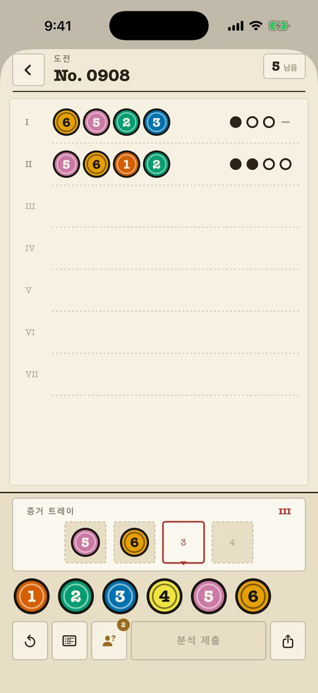
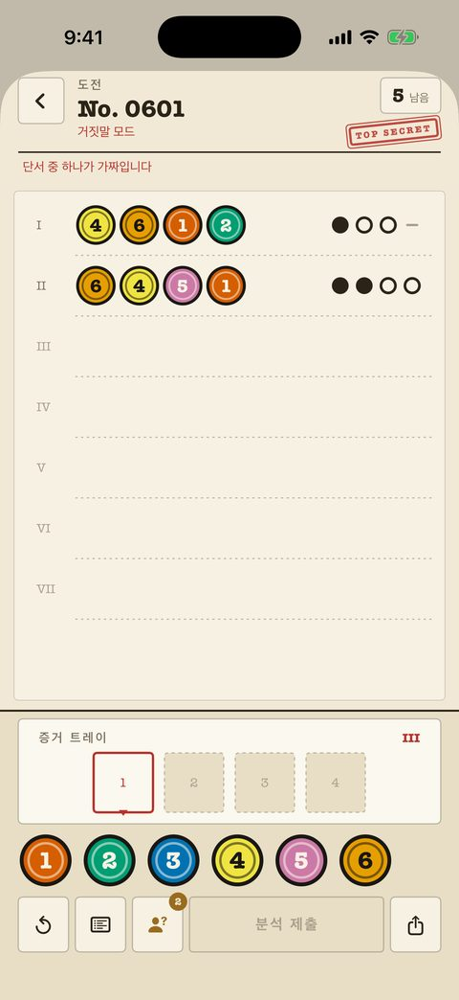
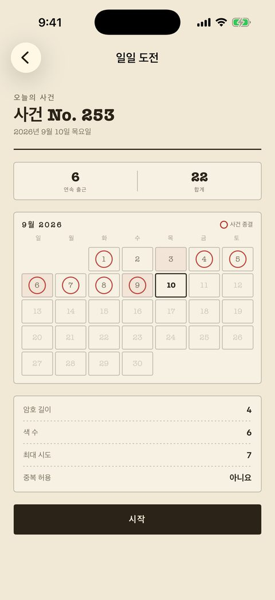

클래식 사건
입문부터 마스터까지 240건, 각각 파일 속 번호 매겨진 한 장입니다. 남은 시도 횟수는 오른쪽 위에, 표시는 순수한 잉크(점·고리·선)라 색에 의존하지 않습니다.
- 지난 분석은 모두 종이에 남아 교차 확인할 수 있습니다.
- 보드 위 노트로 제외한 색과 확정한 색을 표시합니다.
- '모양 표시' 설정은 색마다 고유한 외형을 더합니다.
- 처음 40건은 무료.
마스터마인드(숫자야구) 스타일의 암호 해독 퍼즐을 스파이 서류철로 꾸민 iPhone 게임. 분석마다 잉크 표시가 한 줄로 돌아오고, 거짓말 파일에서는 보고 중 정확히 하나가 가짜입니다.
무료 시작 · $2.99로 전체 해제 · 광고 없음 · 계정 불필요
거짓말 파일 · 보고 예시 4핀 · 6색
I행과 II행은 같은 네 색을 씁니다. I행은 '아무것도 없다', II행은 '넷 다 있다'고 말합니다. 둘 다 참일 수는 없으니, 보고 하나는 가짜입니다.
색을 칸에 넣고 분석을 제출합니다. 사건은 4핀 6색에서 시작해 8색의 긴 암호까지 이어집니다.
팔레트
칸
제출한 줄마다 잉크 표시 네 개가 돌아옵니다. 표시는 어느 핀을 가리키는지 말해 주지 않습니다. 그 빈틈이 바로 퍼즐입니다.
색도 위치도 맞음 색은 맞고 위치가 틀림 암호에 전혀 없음
분석
보고
이 네 색 중 둘이 암호에 있습니다. 어느 둘인지는 아직 모릅니다.
클래식 사건의 보고는 언제나 정직합니다. 거짓말 사건은 사건마다 한 줄을 위조하므로, 깔끔한 추론도 벽에 부딛힐 수 있습니다. 서로 모순되는 두 줄을 찾아 가짜를 버리세요.
I행
II행
I행은 이 색들이 하나도 없다고, II행은 넷 다 있다고 말합니다. 보고 하나는 가짜입니다.

입문부터 마스터까지 240건, 각각 파일 속 번호 매겨진 한 장입니다. 남은 시도 횟수는 오른쪽 위에, 표시는 순수한 잉크(점·고리·선)라 색에 의존하지 않습니다.

따로 묶인 240건의 파일. 같은 보드에 사건마다 위조된 보고 하나, 그리고 종이를 믿지 말라고 일러 주는 빨간 도장.

하루 한 문제, 모두에게 같은 문제. 암호 길이, 색 수, 시도 횟수, 중복 허용 여부는 시작 전에 공개됩니다. 극비의 날은 거짓말 사건입니다.
| 모드 | 내용 | 이용 |
|---|---|---|
| 오늘의 사건 | 하루 한 문제를 모두가 함께. 연속 기록 장부와 위젯 포함. | 무료 |
| 클래식 사건 | 240건, 입문부터 마스터까지, 정직한 표시. | 40건 무료 |
| 거짓말 사건 | 240건, 사건마다 보고 하나가 가짜. | 80건 무료 |
| 대전 모드 | 한 대의 폰을 주고받으며. 한 명이 암호를 정하고 한 명이 풉니다. | 무료 |
| 친구에게 도전 | 종결한 사건을 링크로 보내면 상대는 같은 암호를 받습니다. | 무료 |
| 자유 플레이 | 원하는 난이도로 끝없이 생성되는 보드. | Pro |
| 커스텀 레벨 | 길이, 색, 횟수, 중복을 직접 정해 보드를 만듭니다. | Pro |
Pro는 $2.99 한 번. 남은 360건, 자유 플레이, 에디터가 열립니다. 구독 없음, 광고 없음, 계정 없음, 진행 상황은 기기를 떠나지 않습니다. 두 가지 테마(서류 파일·야간 책상)와 함께, 앱은 기기 언어를 따르거나 설정에서 바꿀 수 있습니다.